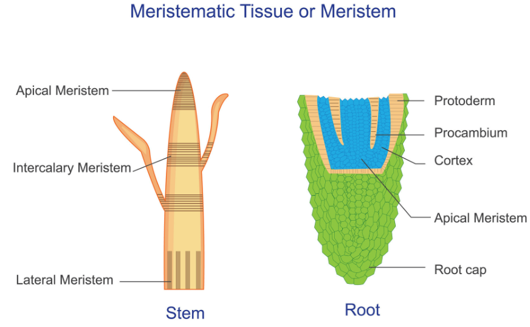
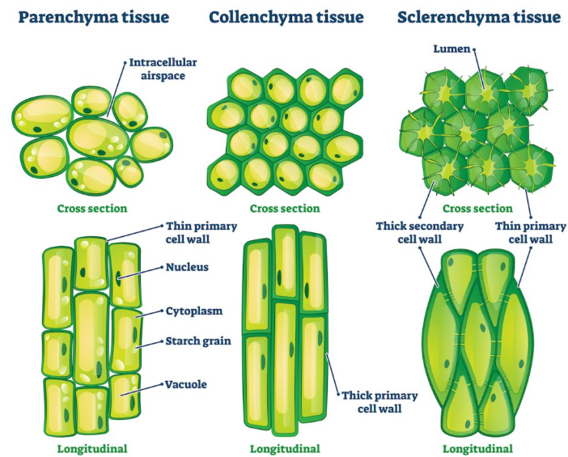
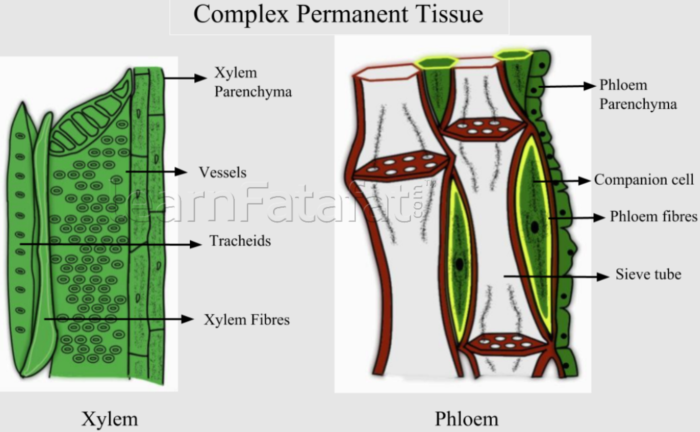

Introduction
Plants are multicellular organisms. Their body is made up of many cells, but all cells do not perform the same function. Some cells help in growth, some store food, some give mechanical strength, and some transport water and food. A group of cells that performs a specific function is called a tissue.
Why Are Plant Tissues Important?
- They help the plant grow in length and thickness.
- They provide strength and support to roots, stems, leaves, flowers, and fruits.
- They transport water and minerals from roots to leaves.
- They transport prepared food from leaves to all parts of the plant.
- They help in storage of food, water, and nutrients.
- They protect the plant from injury, water loss, and infection.
General Characteristics of Plant Tissues
- Plant tissues provide structural strength because plants are stationary.
- Growth is restricted to specific regions called meristems.
- Some plant tissues are made of dead cells to provide mechanical support.
- Plant tissues are comparatively simple and repetitive in arrangement.
- They are specialized for growth, support, storage, protection, and transport.
- Plant tissues are influenced by light, water, minerals, hormones, and environmental conditions.
Classification of Plant Tissues
Plant tissues are broadly divided into two main types: meristematic tissues and permanent tissues. Permanent tissues are further divided into simple permanent, complex permanent, and protective tissues.
Meristematic Tissue
Meristematic tissues are made up of young, actively dividing cells. These tissues are responsible for continuous growth in plants. The cells are small, thin-walled, have dense cytoplasm, a prominent nucleus, and usually lack vacuoles.
Located at the tips of roots and shoots. It helps in increasing the length of the plant. This is called primary growth.
Located on the sides of stems and roots. It helps in increasing the thickness or girth of the plant. This is called secondary growth.
Found at the base of leaves or internodes, especially in grasses. It helps in regrowth and elongation after cutting or grazing.
Permanent Tissue
Permanent tissues are formed from meristematic tissues. Their cells lose the ability to divide and become specialized to perform specific functions. This process is called differentiation.
Simple Permanent Tissue
Living cells with thin cell walls. They store food and water. In leaves, chlorenchyma helps in photosynthesis. In aquatic plants, aerenchyma helps in floating.
Living cells with thickened corners. They provide flexibility and mechanical support to young stems, leaf stalks, and growing parts.
Dead cells with very thick lignified walls. They provide hardness, rigidity, and strength to plant parts such as coconut husk and seed coats.
Protective Tissue
The outermost protective layer of the plant. It reduces water loss, protects against injury, and contains stomata for gaseous exchange.
A dead protective tissue found in older stems and roots. It prevents water loss and protects the plant from mechanical injury and pathogens.
Complex Permanent Tissue
Complex permanent tissues are made up of more than one type of cell. These cells work together as a unit to perform transport functions in plants.
Xylem
Xylem transports water and minerals from roots to stems and leaves. The movement is mostly upward. It also gives mechanical support to the plant.
Tracheids Vessels Xylem Parenchyma Xylem FibresPhloem
Phloem transports food prepared in leaves to all parts of the plant. This movement can occur both upward and downward.
Sieve Tubes Companion Cells Phloem Parenchyma Phloem FibresDifferences Between Meristematic and Permanent Tissue
| Feature | Meristematic Tissue | Permanent Tissue |
|---|---|---|
| Cell Division | Cells divide continuously. | Cells usually lose the ability to divide. |
| Main Function | Responsible for growth of the plant. | Responsible for support, storage, protection, and transport. |
| Cell Size | Cells are small and immature. | Cells are larger and mature. |
| Cytoplasm | Dense cytoplasm is present. | Cytoplasm is less dense or thin. |
| Vacuoles | Usually absent or very small. | Large vacuoles are usually present. |
| Cell Wall | Thin primary cell wall. | May be thin or thick depending on function. |
| Nucleus | Prominent nucleus is present. | Nucleus may be less prominent or absent in dead cells. |
| Location | Found in growing regions like root tips and shoot tips. | Found in mature plant parts like stems, leaves, roots, and fruits. |
Differences Between Xylem and Phloem
| Feature | Xylem | Phloem |
|---|---|---|
| Material Transported | Water and minerals. | Food prepared by leaves. |
| Direction | Mainly upward, from roots to leaves. | Both upward and downward, from leaves to other parts. |
| Cell Nature | Mostly dead cells, except xylem parenchyma. | Mostly living cells, except phloem fibres. |
| Additional Role | Provides mechanical support. | Distributes nutrients for growth and storage. |
| Examples of Elements | Tracheids, vessels, xylem parenchyma, xylem fibres. | Sieve tubes, companion cells, phloem parenchyma, phloem fibres. |
Examples from Daily Life
- Potato: Parenchyma stores food in the form of starch.
- Coconut husk: Sclerenchyma fibres provide hardness and strength.
- Mint stem: Collenchyma gives flexibility to young parts.
- Tree trunk: Xylem provides transport and mechanical support.
- Leaves: Phloem carries prepared food from leaves to other parts of the plant.
- Grass after cutting: Intercalary meristem helps it grow again.
Quick Memory Points
- Meristematic tissue: Dividing tissue responsible for growth.
- Permanent tissue: Mature tissue with fixed functions.
- Parenchyma: Storage and photosynthesis.
- Collenchyma: Flexible support.
- Sclerenchyma: Hard and rigid support.
- Xylem: Carries water and minerals upward.
- Phloem: Carries food in both directions.
- Epidermis and cork: Protection.
Functional Understanding of Plant Tissues
Plant tissues are closely related to the lifestyle of plants. Since plants are fixed in one place, they need strong supporting tissues, efficient transport tissues, and growing tissues at specific regions. Meristematic tissues help the plant grow, while permanent tissues take up specialized roles such as storage, flexibility, hardness, protection, and conduction.
Xylem and phloem are especially important because they connect roots, stems, leaves, flowers, and fruits. Xylem carries water and minerals upward from the roots, while phloem distributes prepared food from leaves to the rest of the plant. Together, these tissues help the plant survive, grow, and adapt to different environments.
Summary
Plant tissues form the structural and functional framework of plants. Meristematic tissues help in continuous growth, while permanent tissues perform specialized functions such as storage, support, protection, and transport. Simple permanent tissues include parenchyma, collenchyma, and sclerenchyma. Complex permanent tissues include xylem and phloem, which help in conduction. Protective tissues like epidermis and cork protect the plant body. Together, these tissues help plants grow, survive, and adapt to their environment.
Diagrams
Use these diagrams to understand the classification and structure of plant tissues more clearly.

Meristematic Tissue

Simple Permanent Tissue

Complex Permanent Tissue

Classification of Plant Tissue